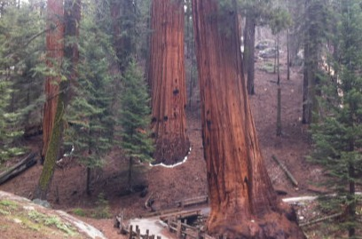
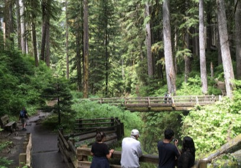

Interests:
I am an avid LOVER of nature and being in communion with nature. I have been to several national parks and hope to visit every national park in the US. For me, there is nothing like experiencing this world in the way my ancestors did prior to technology. Despite the lack of digital connection, in those quiet moments watching the sun rise over a place removed from modernity, I often feel a deeper connection within the world, myself and my community. Here are some cool casual hikes I recommend checking out (if you want some 10 mile+ ones ping me):
Abalone Cove Trail
I was lucky enough to grow up in one of the most beautiful places in the world. This is one of my favorite trails there. Read more..

Congress Trail
The Congress Trail is a popular paved loop that starts at the General Sherman Tree, the largest in the world, and goes about a mile... Read more..

Zion: The Narrows
This is one of my all time favorite trails in Zion National Park. There is nothing cooler then marching through a river.. Read more..

Lover's Lane Trail
Located in the Sol Duc Valley near the town of Forks, this iconic Olympic Peninsula hike features one of the most photographed waterfalls...Read more..